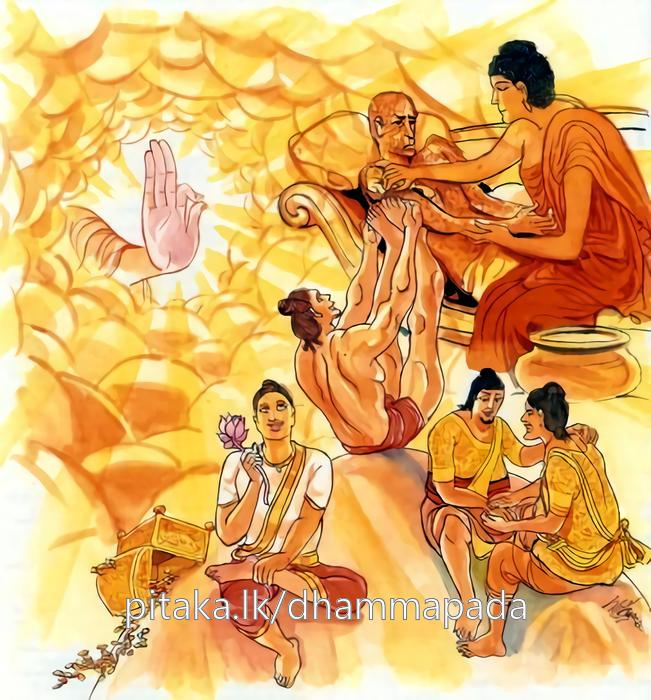

15-6 පසේනදී කොසොල් රජුගේ කථා පුවත
මෙම කතාව සද්ධර්ම සාගරයෙන් ද කියවන්න.
ආරොග්යපරමා ලාභා සන්තුට්ඨිපරමං ධනං
විස්සාසපරමා ඤාතී නිබ්බාණපරමං සුඛං.
සියලු ලාභයෝ තාක් නීරෝග බව පරම කොටැත්තාහ. (රෝගිහු ලත් ලාභයෝ ලාභ නම් නො වෙත් නු යි නිරෝග බව උත්තම ලාභ නම් වෙයි.) ධනය සතුට පරම කොටැත්තේ ය. (යම් ධනයෙක් තමා විසින් ලබන ලද නම්, යම් ධනයෙක් තමා සතු නම්, එයින් ම සතුටු වන බව සෙසු ධනයට වඩා උතුම් ධනයෙක) නෑයෝ නම් විශ්වාසය පරමකොටැත්තෝ ය. (මාපියෝ ද යමකු හා විශ්වාසය නැත්නම් හෙ තෙම නො නෑ ම ය. යමෙක් වනාහි නොනෑ වුව ද විශ්වාස වී නම් හේ උතුම් නෑ ය.) සුවය නිවන පරම කොටැත්තේ ය (නිවන් හා සම සුවයෙක් නැත. එ බැවින් නිවන උතුම් ම සුවය යි.)

"ආරෝග්ය පරමා ලාභා" යන මේ ධර්මදේශනය ශාස්තෲන් වහන්සේ දෙව්රම වැඩ සිටිය දී පසේනදී කොසොල් රජු නිමිති කරගෙන දේශනා කළහ.
කොසොල් රජු සහල් දෝණයක (නැලි සොළසක) බත් ද එයට අනුරූප ව්යාංජන ද අනුභව කරයි. රජු එක දිනක් උදේ ආහාර අනුභව කොට බත් මතය දුරුනොකර ම බුදුන් වෙත ගොස් ක්ලාන්ත ස්වරූපයෙන් එහා මෙහා පෙරළෙමින් සිටියේය. නිදිමතින් පෙළුනේ ඍජුලෙස නිදාගැනීමට නොහැකිව එකත්පසෙක වාඩිවිය. අනතුරුව බුදුරජාණන් වහන්සේ මෙසේ පැවසුහ. ඇයි මහරජ විවේක නොගෙනම පැමිණියේද? එසේය ස්වාමීනි අනුභව කළ තැන්සිට මට මහා දුකක් ඇතිවේ. අනතුරුව බුදුහු මහරජ බොහෝ ආහාර ගැනීම දුකක් වේ යයි පවසා මේ ගාථාව දේශනා කළහ.
මිද්ධි යදා හොති මහග්ඝසොච
නිද්දායිතා සම්පරිවත්ත යායී
මහා වරා හොව නිවාප පුට්ඨො
පුනප්පුනං ගබ්හ මුපෙති මන්දො
"මිද්ධි යදා හොති" - නිදිමත තැනැත්තා දැඩි නිදිමතින් නිදාගන්නේද පෙරළෙමින් නිදාගනී. කෑමගත් මහා ඌරෙකු සේ නැවත නැවත ප්රමාදයෙන් නිදන තැනටම පැමිණේ.
මෙම ගාථාවෙන් අවවාද දී මහරජ භෝජනය නම් පමණ දැන ගතයුතුය. පමණ දැන ගැනීමෙන් සුවය වේ. තවදුරටත් අවවාද දෙමින් මේ ගාථාව පැවසුහ. සිහි ඇති මිනිසා ලද භෝජනයේ පමණ දැන පමණට ආහාර ගනී. එලෙස නොවී මෙන් ඔහුගේ සිරුර වේදනා ඇතිකරයි ඉක්මනින් දිරායයි ආයුෂ ද සීමා වේ.
මනුජ ස්ස සදා සතීමතා
මත්තං ජාන තා ලද්ධ භොජනෙ
තනුතස්ස භවන්ති වේදනා
සනිකං ජීරති ආයු පාලයන්ති
රජුට ගාථාව ඉගෙන ගැනීමට නොහැකිවිය. ළඟ සිටි සුදස්සන නම් බෑනා වු තරුණයාට ගාථාව ඉගෙන ගන්නැයි පැවසුවේ ඔහු මේ ගාථාව ඉගෙන ගෙන මම කුමක් කරන්නේදැයි බුදුන් ගෙන් විමසුවේ. එහිදී බුදුරජාණන් වහන්සේ පැවසුහ. රජු ආහාර ගන්නා විට අවසාන බත්පිඬුව ගන්නාවිට මේ ගාථාව කියන්න. රජු අර්ථය සලකා අවසාන පිඩුව විසි කරනු ඇත. එම පිඬුවේ බත් ඇට ගණනට සිරිලන සේ රජුට බත් උයන අවස්ථාවේ සහල් ප්රමාණය අයින් කරන්න. ඔහු ස්වාමීනි යහපතැයි සවස ද උදේ ද - රජු ආහාර ගන්නා විට අවසාන බත් පිඩුව ගන්නා අවස්ථාවේ දී ගාථාව පැවසුවේය. එවිට අත්හරින බත් පිඬුවේ ඇට ගණන අනුව සහල් අඩුකළේය. රජුද ඔහුට ගාථාව අසා දහසක් පරිත්යාග කළේය. ඔහු පසුකාලයේ දී නැළියක් පමණ බත් ගැනීමෙන් සිහින් සිරුරක් ඇතිවිය. සුවයට පත්විය. අනතුරුව රජු දිනක් බුදුන් වෙත ගොස් බුදුන් වැඳ මෙසේ පැවසුවේය. ස්වාමීනි දැන් මට සුවයක් ඇතිවිය. මම දැන් මුවෙක් හෝ අශ්වයෙක් ලුහුබැඳ අල්ලාගැනීමට හැකිවෙමි. මෙයට පෙර බෑනා සමග මගේ සටනක් විය. දැන් මගේ වජිර කුමාරි නම් දුව සහෝදරියගේ පුතාට ද ඒ ගම ඇයට නෑමට ගන්නා සුවඳ වර්ග සඳහා දෙන ලදිමි. ඔහු සමග අරගලය විවාදය සන්සිඳුනි මේ කරුණ නිසාද සුවයක් ඇතිවිය. කුඩරාජ සමයේ පැවති මාණික්ය රත්නයද මුලදී ඇතිවිය. එයද දැන් මගේ අතට පත්විය. මෙයද සැපයට කරුණකි. ඔබ වහන්සේගේ ශ්රාවකයින්ගේ විශ්වාසවන්තකම කැමතිවන මම ඔබගේ ඥාති දියණියක් ආවාභ කර ගනිමි. මෙයද මගේ සැපයට හේතුවේ. බුදුහු මහරජ නිරෝගිකම නම් උතුම් ලාභයකි. ලද දෙයින් සතුටට පත්වීම තරම් ධනයක් නැත. විශ්වාසවන්තයා සමාන ඥාතියෙක් නැත. නිවණ තරම් සුවයක් ද නැතැයි පවසා මේ ගාථාව පැවසුහ.
උතුම් ලාභය මිනිසෙකුට ඇති - නිරෝගී බව ම යයි දතයුති
සිතේ සතුටම උතුම් සම්පත නිවන් සුවමයි උතුම් සුවසෙත
විස්වාසයයි හොඳම නෑයා - බුදුන් දෙසුවේ කොසොල් රජුහට
එහි ආරෝග්ය පරමා” නිරෝගීබව උතුම් ලාභයයි. රෝගී බව දක්නට ලැබුනද ලාබ අලාභ සිදුවේ. එහෙත් නිරෝගී බව සියළු ලාභ ගෙන ආයේ වෙයි. ආරෝග්ය පරමා ලාභා යන්න එහෙයින් කියන ලද්දේ
සන්තුටඨි පරමං ධනං ගිහි පැවිදි කාටත් තමා ලබන සතුට අන් ධනයන්ට වඩා උතුම් ධනයයි සතුට වනාහි සෙසු සියළු ධනයන්ට වඩා උතුම් වූ පරම ධනයයි. විස්වාස පරමා ඤාති මව හෝ පියා හෝ ඔහු සමග ලබන තමන් සතු විශ්වාසය නැතද ඥාති නොවන කෙනෙක් සමග හෝ පවතින විශ්වාසවන්ත බව උතුම් ඥාතිත්වයයි විස්වාස පරමා ඥාති යන්න එහෙයින් කියන ලදී. නිවන හා සමවූ සුවයක් නම් නැත. නිබ්බාණං පරමං සුඛං යන්න එහෙයින් කියන ලදී.